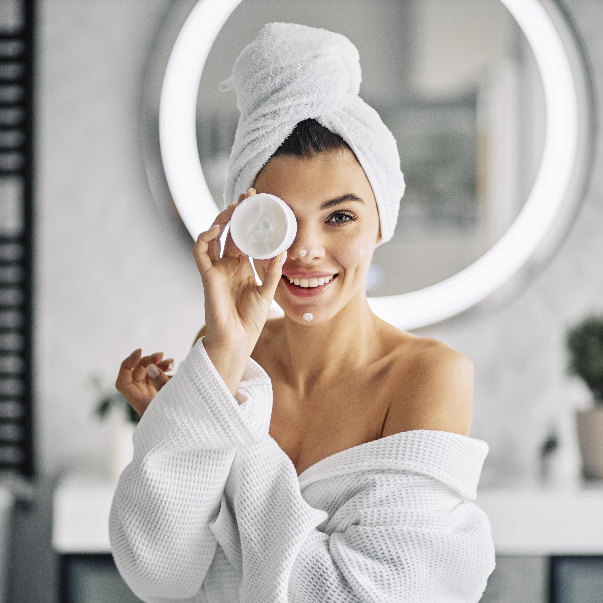

Profesionales de la piel
Sobre nosotros
Somos un grupo de dermátologos y cosmiatras dedicados al cuidado de la piel facial. Es por eso que ofrecemos atención personalizada a distancia o de forma presencial para poder brindarte los mejores consejos y armar la rutina de cuidado indicado dependiendo de tu tipo de piel y estilo de vida. Te asesoramos sobre los pasos que debe incluir tu rutina, te recomendamos una variedad de productos según tus necesidades y sacamos todas tus dudas sobre en skincare. El servicio se divide en 2 sesiones para comenzar. En la primera vamos a conocernos, evaluaremos tu tipo de piel y conoceremos tu rutina diaria para poder ofrecerte los cuidados necesarios. En la segunda, nos encontraremos para darte nuestra devolución y evacuar todas tus dudas. Cada sesión dura 20 minutos y vos podes elegir el profesional que desees. Recomendamos repetir la sesión siempre que consideres necesario y mínimo, una vez al año, ya que la piel está expuesta a cambios y sus necesidades no siempre son las mismas. Para comenzar con el proceso, solo tenes que completar el formulario de nuestra sección de "contacto" para que luego nosotros podamos comunicarnos con vos. Somos expertos y estamos actualizados para poder brindarte el mejor servicio.